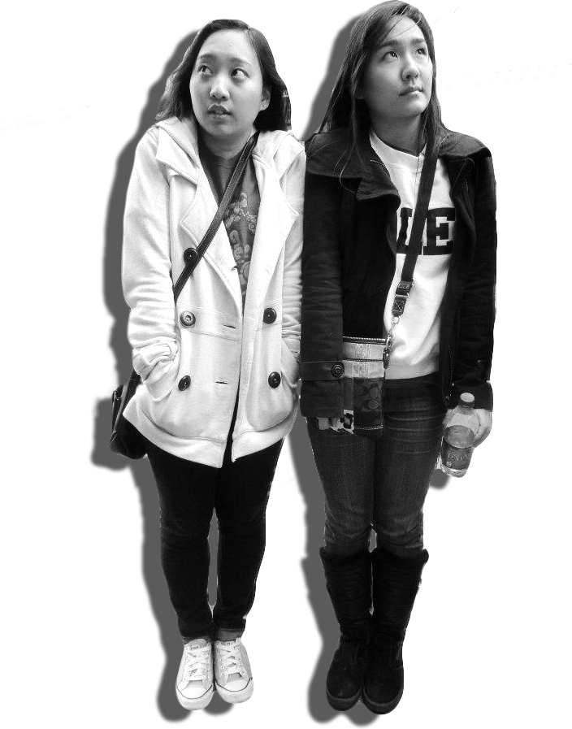

home
members
history
shop
contact
rush
RUSH US!
Why rush?

rush
noun, verb \ˈrəsh\
a singular, once-in-a-lifetime, Yale-unique process set up by the Yale SGC
(Singing Group Council)
in which talented freshmen audition for any and all of the thirteen SGC a cappella groups at Yale.
What's so special about
Living Water?